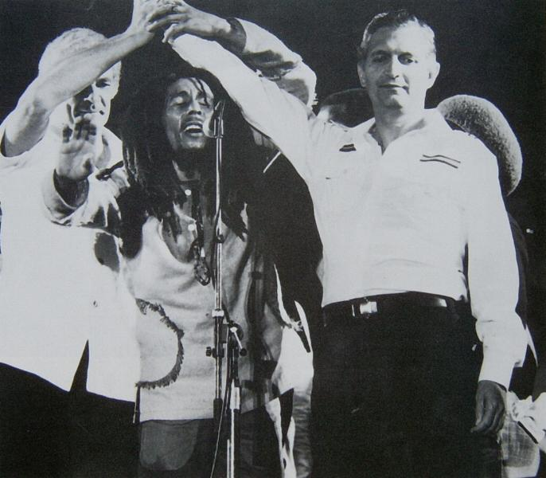

| Adrian Boot | ||
| Back 07/21 |
 | Next 09/21 |
Bob Marley brings together rival political leaders Michael Manley and Edward Seaga at the One Love Peace Concert, April 22, 1978, organised to celebrate both the street gang truce called after the violent Jamaican General Election in '76 (during which Marley himself was shot and wounded) and the 12th anniversary of Haile Selassie's only visit to Jamaica. |